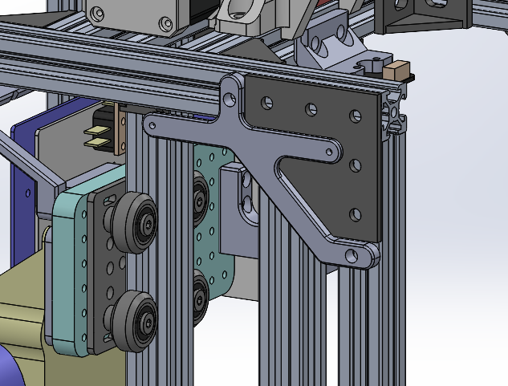

Preparing for debrief. Updating Gantt Chart. Asked team members about their tasks and estimated
completion times:
Nick
Update pages weeks 9-10:
Caffeine study
BOM (MR, NK)
week 10
GUI - start of next week
Rita:
database setup, weeks 9-10
website-side of authentication 10
code for speaker: week 10
Matvey:
ToF, LCD, speaker - week 9
merge and finalize schematics - end of this week (week 9)
route PCB - end of week 9
all
schematics - done by the end of the week,
order PCBs end of this week
USB-C Connector Follow-up
Emailing the professor to justify the USB-C connector selection for our PCB:
Hi professor,
I wanted to follow up on the debrief we had today regarding the use of USB-C connectors for CAN bus.
I want to expand my justification of the idea, express some concerns that arose after the
debriefing.
The key point of this approach is simplified wiring for small-scale projects. I acknowledge that
this solution would not work for an industrial environment, but I think this might be a useful
technique for wiring components inside a single machine. Furthermore, PCB mounts can be designed in
such a way to reduce strain on the connectors and increase the longevity.
Your point about single node failing and causing other nodes to go down got me thinking. Since USB-C
Power Delivery negotiation requires
Designed a mounting bracket for Elevator Controller PCB Stackup. Used PC104 Standard PCB Drawings as a
reference.

CAD Render of EC Mount in the context of the assembly
Thoughts on PD feature
After the debrief, I wanted to email the professor to confirm our use of USB-C connector for CAN bus.
Since the professor said that USB-C is unsuitable for industrial applications, I wanted to justify the
design decision of using this type of connector in our project.
In order to properly articulate my argument and explain how safety features, such as fuses, will be
integrated in our system, I tried to consider ways to prevent cascaded power failures, i.e. how to add a
fuse to the USB PD subsystem such that failure of one node which results in a blown fuse won't
result in cascaded power outages in nodes downstream. I looked into how to organize power regulators in
a way which will facilitate this. But research into PD source controller ICs showed that they are
designed to be used with either two set voltage levels: 1) 5 V bus 2) one of the supported PD voltages;
or use a controlled power regulator, which can be configured to output 5 V or requested PD voltage
level. List of considered ICs:
STUSB4710
TI TPS25740B
Infineon/Cypress CCG3PA
Microchip MCP22301
Design of a configurable power supply would prove to be difficult, especially considering that it will
need to be redundant/separate from the main 5-20V to 5 V regulator.
As a result of my research and discussion with Nick, who is responsible for PD subsystem of the PCB, we
decided to drop the PD idea. This will have to be implemented in a future project.
We will only use 5 V which is used in a standard USB connection. We will utilize higher amperage to
allow more power to be delivered to a branch. Furthermore, previous 5 V buck converter design will be
used with a secondary high voltage power input to the board to allow 1 branch to use more than 15 W of
power.